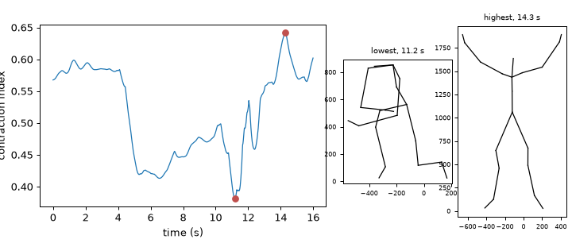
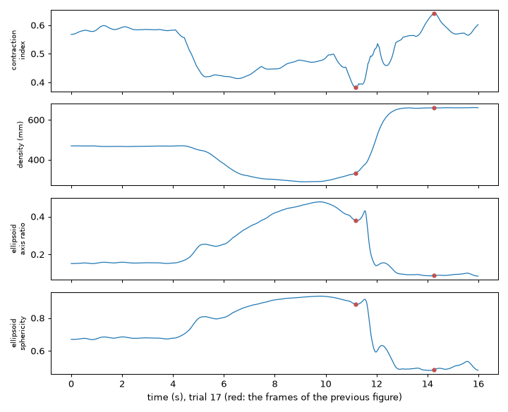
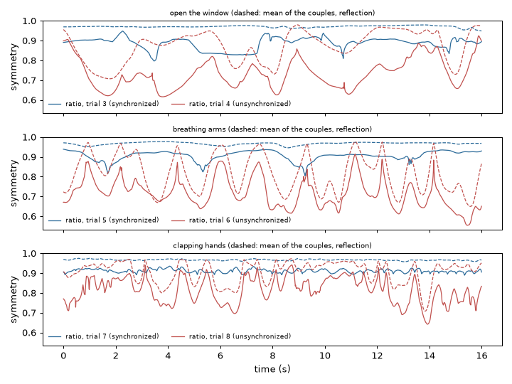
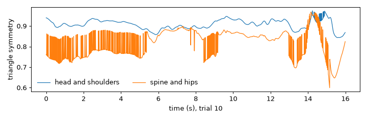
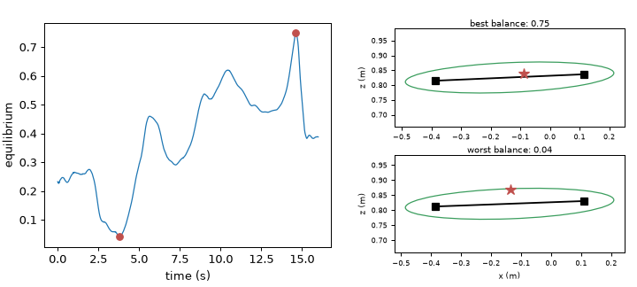
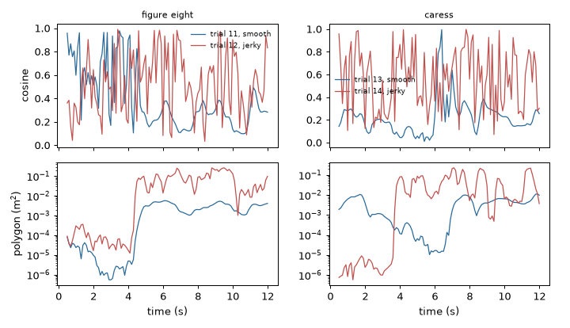
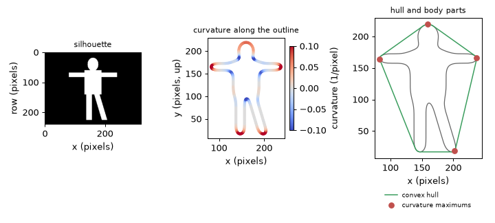

Note
Go to the end to download the full example code.
Low level: shape and posture#
How a body occupies space at one instant, and how a path changes direction. This tutorial measures the contraction and expansion of a posture, its symmetry and its balance, the turns of a hand path, and the outline of a silhouette: its curvature, its convex hull and its salient points.
- Goals:
measure how much space a posture fills; compare left and right; estimate balance on the floor; measure the changes of direction of a path; go from a contour to its curvature, hull and body parts.
- Prerequisites:
- Data:
trials 3 to 8 (synchronized and unsynchronized arm movements), 10 (sumo squat), 11 to 14 (figure eight and caress), 17 and 18 (hiding and opening up) and 19 (alternating balance) of the example session; a synthetic silhouette.
- Time:
about 30 minutes.
Data used in this tutorial#
The recordings are in millimetres, with 20 joints at 100 samples per second. The vertical axis is y, the lateral axis
(left to right) is x and z is the depth. Most features of this tutorial are frame features: they take one
posture (a (joints, 3) array), keep no memory and need no sampling rate. Where a feature has a length in its answer or in
its parameters we say which unit it uses.
Trial 17 is the task “hiding and catching attention”: the performer moves between a contracted posture, hiding, and an open one, drawing attention.
import matplotlib.pyplot as plt
import numpy as np
from helpers import draw_skeleton
from pyeyesweb.datasets import load_qualisys_trial
hiding = load_qualisys_trial(17, start=0, stop=16)
time = hiding.timestamps
print(hiding.positions.shape, "= (frames, joints, xyz) in", hiding.units, "| duration", hiding.duration, "s")
(1600, 20, 3) = (frames, joints, xyz) in mm | duration 16.0 s
Contraction and expansion: how much of its box does the body fill?#
An expanded posture takes up more space around the body than a contracted one. The contraction index of
BoundingBoxFilledArea is the surface of the convex hull of the joints (the smallest convex
solid that contains them) divided by the surface of their bounding box (the smallest axis-aligned box that contains them). It
has no unit and lies between 0 and 1: it is high when the joints fill the box, and low when the posture is thin or diagonal
inside it (see Shape, symmetry and balance).
from pyeyesweb.low_level import BoundingBoxFilledArea
contraction = BoundingBoxFilledArea().run(hiding.positions, timestamps=time)
index = np.asarray(contraction.contraction_index)
lowest, highest = int(np.argmin(index)), int(np.argmax(index))
print(contraction)
print(f"lowest {index[lowest]:.2f} at {time[lowest]:.1f} s, highest {index[highest]:.2f} at {time[highest]:.1f} s")
Recorder(BoundingBoxFilledArea, rows=1600, columns=['contraction_index'], status={'OK': 1600})
lowest 0.38 at 11.2 s, highest 0.64 at 14.3 s
fig = plt.figure(figsize=(8, 3.4))
axis = fig.add_axes([0.07, 0.15, 0.5, 0.75])
axis.plot(time, index, lw=1)
axis.plot(time[[lowest, highest]], index[[lowest, highest]], "o", color="#c0504d")
axis.set_xlabel("time (s)")
axis.set_ylabel("contraction index")
for position, frame, label in ((0.60, lowest, "lowest"), (0.80, highest, "highest")):
small = fig.add_axes([position, 0.1, 0.19, 0.8])
draw_skeleton(hiding.positions[frame], hiding.labels, small, units="mm", lw=1)
small.set_title(f"{label}, {time[frame]:.1f} s", fontsize=8)
small.tick_params(labelsize=6)
small.set_xlabel("")
small.set_ylabel("")

The index follows the cycle of the task. It measures how much of the box the joints fill, not the size of the body: a tall posture with the arms up and a hunched one with the arms out can have the same value, which is why the next two features complement it.
Takeaway. The contraction index is the fraction of its bounding box that the posture fills; it is dimensionless.
How spread and how round is the body#
PointsDensity is the mean distance of the joints from their centroid, in the unit of the data
(millimetres here): large for a body that is spread out. EllipsoidSphericity fits an ellipsoid to
the joints (its radii are the square roots of the eigenvalues of the covariance of the joints) and reports the
axis_ratio of its smallest to its largest radius and the sphericity, 1 for a ball and smaller for a stretched or
flattened cloud. A standing person is long and thin, so the sphericity is low; with the arms spread it rises.
from pyeyesweb.low_level import EllipsoidSphericity, PointsDensity
density = PointsDensity(skeleton=hiding.skeleton).run(hiding.positions, timestamps=time)
ellipsoid = EllipsoidSphericity().run(hiding.positions, timestamps=time)
print(density.schema)
print(ellipsoid.schema)
fig, axes = plt.subplots(4, 1, figsize=(8, 6.5), sharex=True)
for ax, (values, name) in zip(axes, ((index, "contraction\nindex"), (density.density, "density (mm)"),
(ellipsoid.axis_ratio, "ellipsoid\naxis ratio"), (ellipsoid.sphericity, "ellipsoid\nsphericity"))):
ax.plot(time, values, lw=1)
ax.plot(time[[lowest, highest]], np.asarray(values)[[lowest, highest]], "o", color="#c0504d", ms=4)
ax.set_ylabel(name, fontsize=8)
axes[-1].set_xlabel("time (s), trial 17 (red: the frames of the previous figure)")
fig.tight_layout()

Schema(Output('density', unit='<length>'), Output('centroid', shape=(3,), unit='<length>'))
Schema(Output('sphericity'), Output('axis_ratio'), Output('radii', shape=(3,), unit='<length>'))
The three curves answer three questions on the same recording: how much of its box the posture fills, how far the joints are from the centre, and how elongated the cloud of joints is. In this task the density and the sphericity vary together, as the body opens and closes.
Takeaway. Density gives the spread of the joints in length units; sphericity and axis ratio give the shape of the cloud without a unit.
Left and right: Symmetry#
A posture is symmetric when its left half is the mirror image of its right half. Trials 3 to 8 are three tasks, each
made in a synchronized way (the two arms do the same) and in an unsynchronized one: opening a window (3, 4), a breathing
movement of the arms (5, 6) and clapping hands (7, 8). Symmetry takes couples of joints that
mirror each other, from the pairs of the skeleton, and has two formulas chosen by method:
"ratio"(the default) compares, for each couple and each axis, the distances of the left and right joint to a reference joint, and gives one index between 0 and 1;"reflection"mirrors the right joint of each couple across the plane perpendicular toxand gives one score per couple, also between 0 and 1.
The ratio method needs a reference joint, the neck by default. A skeleton can carry its own: trial.skeleton has the pelvis.
We name the neck explicitly. The preset "qualisys_sport" of the 41 raw markers is incomplete and has no reference, so
for it reference_point= is required (Inputs).
from pyeyesweb.low_level import Symmetry
print("preset qualisys_sport, reference given:",
Symmetry(skeleton="qualisys_sport", reference_point="Chest").parameters["reference_point"])
ratio = Symmetry(skeleton=hiding.skeleton, reference_point="Neck")
reflection = Symmetry(skeleton=hiding.skeleton, method="reflection")
print(ratio.outputs, reflection.outputs)
preset qualisys_sport, reference given: Chest
Schema(Output('symmetry')) Schema(Output('pair_symmetry', shape=(8,)))
pairs = ((3, 4, "open the window"), (5, 6, "breathing arms"), (7, 8, "clapping hands"))
symmetry = {}
for synchronized, unsynchronized, _ in pairs:
for number in (synchronized, unsynchronized):
trial = load_qualisys_trial(number, start=5, stop=21)
symmetry[number] = (trial.timestamps,
np.asarray(ratio.run(trial.positions).symmetry),
np.asarray(reflection.run(trial.positions).pair_symmetry))
fig, axes = plt.subplots(3, 1, figsize=(8, 6), sharex=True, sharey=True)
for ax, (synchronized, unsynchronized, task) in zip(axes, pairs):
for number, color, label in ((synchronized, "#2b6a99", "synchronized"), (unsynchronized, "#c0504d", "unsynchronized")):
stamps, by_ratio, by_reflection = symmetry[number]
ax.plot(stamps, by_ratio, color=color, lw=1, label=f"ratio, trial {number} ({label})")
ax.plot(stamps, by_reflection.mean(axis=1), color=color, lw=1, ls="--")
ax.set_title(f"{task} (dashed: mean of the couples, reflection)", fontsize=8)
ax.set_ylabel("symmetry")
ax.legend(frameon=False, fontsize=7, loc="lower left", ncol=2)
axes[-1].set_xlabel("time (s)")
fig.tight_layout()
print(f"{'trial':<7}{'ratio':>8}{'reflection':>12}")
for number, (stamps, by_ratio, by_reflection) in symmetry.items():
print(f"{number:<7}{by_ratio.mean():>8.2f}{by_reflection.mean():>12.2f}")

trial ratio reflection
3 0.89 0.97
4 0.73 0.87
5 0.91 0.97
6 0.72 0.82
7 0.91 0.97
8 0.81 0.91
Both methods rank every synchronized trial above its unsynchronized twin. The ratio index is a single number with a lower level (it counts a couple only when the joints are on opposite sides of the reference); the reflection method gives a score per couple, labelled by the two joints, which says where the symmetry breaks. Compare values of the same method only.
Takeaway. Symmetry compares couples of left and right joints; give the reference joint explicitly when the skeleton has none.
Head over the shoulders: TriangleSymmetry#
TriangleSymmetry looks at three points in a plane, an apex and a left and right vertex, and
measures how far the apex is from being above the middle of the base: 1 if it is centred, falling to 0 as the apex moves
aside or the base tilts. It measures the lateral lean of the upper body from the head and the two shoulders. Trial 10 is a
sumo squat that alternates symmetric and asymmetric postures. The three points are (x, y) points of the frontal plane.
from pyeyesweb.low_level import TriangleSymmetry
triangle = TriangleSymmetry()
for name, points in (("apex centred", ((0, 10), (-5, 0), (5, 0))), ("apex off centre", ((3, 10), (-5, 0), (5, 0))),
("one shoulder raised", ((0, 10), (-5, 0), (5, 5)))):
print(f"{name:<22} symmetry = {float(triangle.process(*points).symmetry):.2f}")
squat = load_qualisys_trial(10, start=0, stop=16)
front = lambda name: squat.joint(name)[:, [0, 1]] # the frontal plane: x lateral, y vertical
upper = triangle.run(front("Head"), front("Left_Shoulder"), front("Right_Shoulder"), timestamps=squat.timestamps)
lower = triangle.run(front("Spine"), front("Left_Hip"), front("Right_Hip"), timestamps=squat.timestamps)
fig, ax = plt.subplots(figsize=(8, 2.6))
ax.plot(squat.timestamps, upper.symmetry, lw=1, label="head and shoulders")
ax.plot(squat.timestamps, lower.symmetry, lw=1, label="spine and hips")
ax.set_xlabel("time (s), trial 10")
ax.set_ylabel("triangle symmetry")
ax.legend(frameon=False, ncol=2)
fig.tight_layout()

apex centred symmetry = 1.00
apex off centre symmetry = 0.25
one shoulder raised symmetry = 0.60
Takeaway. Triangle symmetry tells how centred the apex is over the base; it takes three (x, y) points per frame.
Balance: Equilibrium#
A person is balanced when the centre of mass is above the support between the feet. Equilibrium
works on the floor plane: the support is an ellipse centred between the feet and elongated along the line of the feet; the
value is 1 when the barycenter is at its centre, falls linearly to 0 at its border and stays 0 outside (the person is about
to lose balance). The angle is the direction of the line between the feet, in degrees. You give the three points
(left foot, right foot, barycenter) on the floor plane, so you choose the plane and compute the barycenter: here the mean of
the 20 joints. The vertical axis is y, so the floor plane is (x, z). The margin of the support (0.1 m by default) is
in metres, so we work in metres. Trial 19 alternates balance and imbalance on tiptoes.
from matplotlib.patches import Ellipse
from pyeyesweb.low_level import Equilibrium
tiptoe = load_qualisys_trial(19, start=0, stop=16).to_units("m")
floor = lambda points: points[..., [0, 2]]
left_foot, right_foot = floor(tiptoe.joint("Left_Foot")), floor(tiptoe.joint("Right_Foot"))
barycenter = floor(tiptoe.positions.mean(axis=1))
equilibrium = Equilibrium()
balance = equilibrium.run(left_foot, right_foot, barycenter, timestamps=tiptoe.timestamps)
value = np.asarray(balance.equilibrium)
best, worst = int(np.argmax(value)), int(np.argmin(value))
print(balance)
Recorder(Equilibrium, rows=1600, columns=['equilibrium', 'angle'], status={'OK': 1600})
fig = plt.figure(figsize=(8, 3.6))
axis = fig.add_axes([0.07, 0.14, 0.45, 0.78])
axis.plot(tiptoe.timestamps, value, lw=1)
axis.plot(tiptoe.timestamps[[best, worst]], value[[best, worst]], "o", color="#c0504d")
axis.set_xlabel("time (s)")
axis.set_ylabel("equilibrium")
for bottom, frame, label in ((0.56, best, "best"), (0.12, worst, "worst")):
small = fig.add_axes([0.62, bottom, 0.36, 0.34])
left, right, center = left_foot[frame], right_foot[frame], barycenter[frame]
major = np.linalg.norm(right - left) / 2 + equilibrium.margin
minor = equilibrium.margin * equilibrium.y_weight
direction = np.degrees(np.arctan2(*(right - left)[::-1]))
small.add_patch(Ellipse((left + right) / 2, 2 * major, 2 * minor, angle=direction, fill=False, color="#3a9d5d"))
small.plot(*np.c_[left, right], "ks-")
small.plot(*center, "*", color="#c0504d", ms=10)
small.set_aspect("equal", adjustable="datalim")
small.set_title(f"{label} balance: {value[frame]:.2f}", fontsize=8, pad=2)
small.tick_params(labelsize=6)
small.set_ylabel("z (m)", fontsize=7)
small.set_xlabel("x (m)" if label == "worst" else "", fontsize=7)

The star is the barycenter and the squares are the feet. The value is high when the star lies inside the ellipse near its centre, and drops as it moves towards the border.
Takeaway. Equilibrium is the position of the barycenter inside the support ellipse of the feet, from 1 at the centre to 0 at the border; you pick the floor plane.
Changes of direction of a path: DirectionChange#
A path that turns often is more abrupt than one that does not. DirectionChange looks at the
path of one point over a window of positions and gives two numbers: cosine, between 0 and 1, which is 1 when the path
turns by a right angle between the first and the second half of the window and falls to 0 for a straight path or a U-turn;
and polygon, the area enclosed by the path once it is reduced to a few points, in the unit of the data squared: large
for broad movements that enclose space. The feature takes one point of two or three coordinates per call. Here a window of
0.5 s (50 samples) answers every 0.1 s, on the right hand in metres.
from pyeyesweb.low_level import DirectionChange
hands = {number: load_qualisys_trial(number, start=0, stop=12).to_units("m") for number in (11, 12, 13, 14)}
direction_change = DirectionChange(window=50, hop=10)
results = {}
for number, trial in hands.items():
results[number] = direction_change.run(trial.joint("Right_Hand"), timestamps=trial.timestamps)
print(results[11])
Recorder(DirectionChange, rows=1200, columns=['cosine', 'polygon'], status={'OK': 116, 'WARMING_UP': 49, 'NO_OUTPUT': 1035})
tasks = ((11, 12, "figure eight"), (13, 14, "caress"))
fig, axes = plt.subplots(2, 2, figsize=(8, 4.6), sharex=True)
print(f"{'trial':<7}{'execution':<12}{'mean cosine':>13}{'median polygon (m^2)':>24}")
for column, (smooth, jerky, task) in enumerate(tasks):
for number, label, color in ((smooth, "smooth", "#2b6a99"), (jerky, "jerky", "#c0504d")):
result = results[number]
ok = np.asarray(result.status) == 0
stamps = hands[number].timestamps
axes[0, column].plot(stamps[ok], np.asarray(result.cosine)[ok], color=color, lw=1, label=f"trial {number}, {label}")
axes[1, column].plot(stamps[ok], np.asarray(result.polygon)[ok], color=color, lw=1)
print(f"{number:<7}{label:<12}{np.nanmean(np.asarray(result.cosine)[ok]):>13.2f}{np.nanmedian(np.asarray(result.polygon)[ok]):>24.4f}")
axes[0, column].set_title(task, fontsize=9)
axes[0, column].legend(frameon=False, fontsize=7)
axes[1, column].set_yscale("log")
axes[1, column].set_xlabel("time (s)")
axes[0, 0].set_ylabel("cosine")
axes[1, 0].set_ylabel("polygon (m$^2$)")
fig.tight_layout()

trial execution mean cosine median polygon (m^2)
11 smooth 0.39 0.0017
12 jerky 0.53 0.0242
13 smooth 0.22 0.0033
14 jerky 0.56 0.0112
On average the smooth executions turn less (smaller cosine) and enclose a smaller area; the jerky ones make the path wander, which raises both, the median area several times (note the logarithmic axis). Both values depend on the window: compare windows of the same length.
Takeaway. DirectionChange summarises the turns of a path in a window by a cosine in [0, 1] and an enclosed area.
Contours: curvature, hull and body parts#
A contour is the closed outline of a shape, an ordered (N, 2) array of points. Four features work on a contour, one
call per outline (see Imaging):
FilterContoursmooths each coordinate with a Gaussian kernel, because the outline of a silhouette is jagged, as it follows the pixels;ContourCurvaturegives the signed curvature at every point, 1/r on a circle of radius r, positive where the contour turns left (counter-clockwise);ConvexHullgives the vertices of the smallest convex polygon around the contour;BodyPartsFromCurvaturefinds the salient points (head, hands, feet) as the extremes of the curvature.
The example data hold motion capture only, so we use a synthetic silhouette (a body with its arms out, from helpers). Its
outline is found with the contour routine of matplotlib, resampled to 300 equally spaced points and given counter-clockwise
order in a frame where y points up.
from contourpy import contour_generator
from helpers import synthetic_silhouette
mask = synthetic_silhouette() # 240 x 320 pixels, 0 or 255
lines = contour_generator(z=(mask > 0).astype(float)).lines(0.5)
raw = max(lines, key=len) # the longest closed line: the body
raw = np.c_[raw[:, 0], mask.shape[0] - raw[:, 1]] # (x, y) in pixels, y up
steps = np.r_[0.0, np.cumsum(np.linalg.norm(np.diff(raw, axis=0), axis=1))]
along = np.linspace(0.0, steps[-1], 300, endpoint=False)
outline = np.c_[np.interp(along, steps, raw[:, 0]), np.interp(along, steps, raw[:, 1])]
signed_area = 0.5 * np.sum(outline[:, 0] * np.roll(outline[:, 1], -1) - np.roll(outline[:, 0], -1) * outline[:, 1])
if signed_area < 0: # clockwise: reverse the order
outline = outline[::-1]
print("outline:", outline.shape, "(points, xy) in pixels")
outline: (300, 2) (points, xy) in pixels
We check the curvature on shapes whose answer is known (a circle of radius 100 pixels has curvature 0.01), then smooth the
outline, take its curvature and hull, and look for the body parts. BodyPartsFromCurvature wants a smooth contour: on the
raw outline every pixel step is a corner. On a counter-clockwise contour the tips are the curvature maximums.
from pyeyesweb.low_level import BodyPartsFromCurvature, ContourCurvature, ConvexHull, FilterContour
circle_angle = np.linspace(0, 2 * np.pi, 100, endpoint=False)
circle = np.c_[100 * np.cos(circle_angle), 100 * np.sin(circle_angle)]
curvature_of = ContourCurvature()
print("circle of radius 100: curvature", np.round(curvature_of.process(circle).curvature[:3], 4))
smoother = FilterContour(window=15, gaussian_sigma=4.0)
smooth = smoother.process(outline).contour
curvature = curvature_of.process(smooth).curvature
hull = ConvexHull(integer_coordinates=False).process(smooth).hull
parts = BodyPartsFromCurvature(minimum_distance=15, track_points=False).process(curvature, smooth)
print("raw curvature range:", np.round([curvature_of.process(outline).curvature.min(), curvature_of.process(outline).curvature.max()], 2),
"| smoothed:", np.round([curvature.min(), curvature.max()], 2))
print("hull:", hull.shape[0], "vertices |", len(parts.maximums), "maximums (x, y) in pixels:")
for label, point in parts.maximums.items():
print(f" {label}: ({point[0]:.0f}, {point[1]:.0f})")
circle of radius 100: curvature [0.01 0.01 0.01]
raw curvature range: [-1.17 0.43] | smoothed: [-0.47 0.25]
hull: 31 vertices | 4 maximums (x, y) in pixels:
label_max0: (83, 164)
label_max1: (159, 219)
label_max2: (237, 166)
label_max3: (202, 18)
fig, axes = plt.subplots(1, 3, figsize=(8, 3.6), gridspec_kw={"width_ratios": [1, 1, 1.2]})
axes[0].imshow(mask, cmap="gray", origin="upper")
axes[0].set_title("silhouette", fontsize=9)
axes[0].set_xlabel("x (pixels)")
axes[0].set_ylabel("row (pixels)")
scatter = axes[1].scatter(*smooth.T, c=curvature, s=6, cmap="coolwarm", vmin=-0.1, vmax=0.1)
axes[1].set_aspect("equal")
axes[1].set_title("curvature along the outline", fontsize=9)
axes[1].set_xlabel("x (pixels)")
axes[1].set_ylabel("y (pixels, up)")
fig.colorbar(scatter, ax=axes[1], shrink=0.6, label="curvature (1/pixel)")
axes[2].plot(*np.r_[smooth, smooth[:1]].T, color="0.4", lw=1)
axes[2].plot(*np.r_[hull, hull[:1]].T, color="#3a9d5d", lw=1.2, label="convex hull")
tips = np.array(list(parts.maximums.values()))
axes[2].plot(*tips.T, "o", color="#c0504d", label="curvature maximums")
axes[2].set_aspect("equal")
axes[2].set_title("hull and body parts", fontsize=9)
axes[2].set_xlabel("x (pixels)")
axes[2].legend(frameon=False, fontsize=7, loc="upper center", bbox_to_anchor=(0.5, -0.2), ncol=1)
fig.tight_layout()

The maximums sit at the head, the two hands and one foot, which is what the detector is for; the second foot is not found,
because its corner is rounder after the smoothing. The number of parts found therefore depends on the smoothing and on
minimum_distance. The hull touches the tips and bridges the concave parts (armpits and crotch), so the area between the
outline and the hull measures how far the body is from convex. With track_points=True (the default) the labels of one call
are carried over to the nearest points of the next, which is what a video needs.
Takeaway. Smooth the contour, then read its curvature, hull and body parts; the orientation of the contour decides which extremes are the tips.
Try it#
BoundingBoxFilledAreaon trial 18, where the performer also turns. Find its lowest and highest value and compare the range with trial 17.Run
Symmetrywithindex_type="symmetry_asymmetry"andaggregation="min"on a frame of trial 3 and a frame of trial 4 (frame 800 of each, 8 s into the trimmed recording). How do the values change?In
DirectionChange, setmetrics=["polygon"]and changenumber_of_subsamplesfrom 20 to 5. What happens to the median polygon of trial 14?
Solutions#
Exercise 1. The box of the index is axis-aligned, so a performer who turns changes the index even without changing the posture.
turning = load_qualisys_trial(18, start=0, stop=16)
for name, trial in (("trial 17", hiding), ("trial 18", turning)):
values = np.asarray(BoundingBoxFilledArea().run(trial.positions).contraction_index)
print(f"{name}: lowest {values.min():.2f}, highest {values.max():.2f}")
trial 17: lowest 0.38, highest 0.64
trial 18: lowest 0.35, highest 0.55
Exercise 2. The two options change the level of the value, not which trial is more symmetric.
frames = {number: load_qualisys_trial(number, start=5, stop=21).positions[800] for number in (3, 4)}
for options in (dict(), dict(index_type="symmetry_asymmetry", aggregation="min")):
feature = Symmetry(skeleton=hiding.skeleton, reference_point="Neck", **options)
print(options or "defaults", {number: round(float(feature.process(frame).symmetry), 2) for number, frame in frames.items()})
defaults {3: 0.92, 4: 0.65}
{'index_type': 'symmetry_asymmetry', 'aggregation': 'min'} {3: 0.51, 4: 0.01}
Exercise 3. Fewer subsamples give a coarser polygon; in this recording it encloses less area.
for subsamples in (20, 5):
only_polygon = DirectionChange(window=50, hop=10, metrics=["polygon"], number_of_subsamples=subsamples)
run = only_polygon.run(hands[14].joint("Right_Hand"), timestamps=hands[14].timestamps)
ok = np.asarray(run.status) == 0
print(f"number_of_subsamples={subsamples}: median polygon {np.nanmedian(np.asarray(run.polygon)[ok]):.4f} m^2")
number_of_subsamples=20: median polygon 0.0112 m^2
number_of_subsamples=5: median polygon 0.0078 m^2
Next steps#
Shape, symmetry and balance and Imaging: the definitions of the shape, symmetry, balance and contour features.
Inputs: skeletons, presets and the reference joint.
Layer 2: low-level features: the API of the features of this tutorial.
The mid-level features build on these quantities: the next layer segments gestures and measures their qualities.